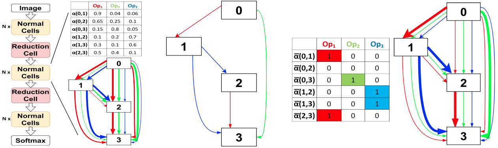
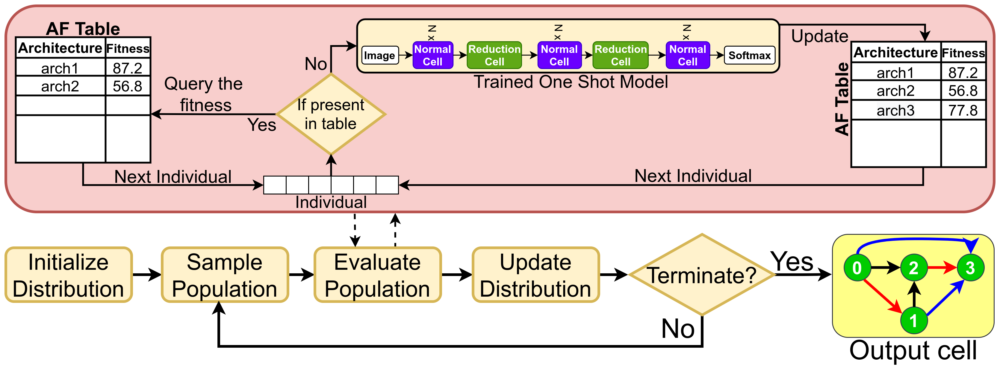
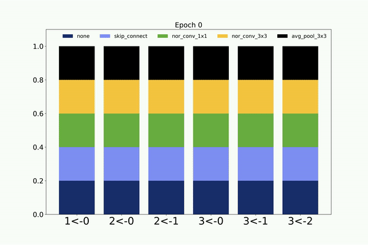
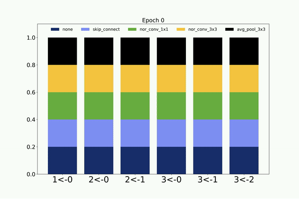
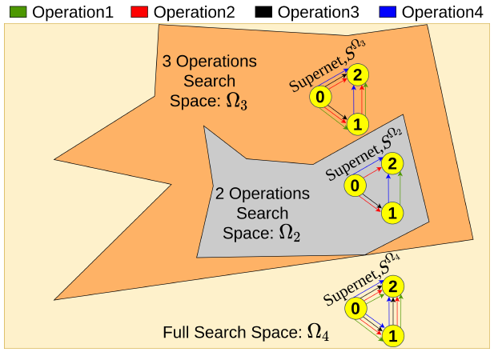
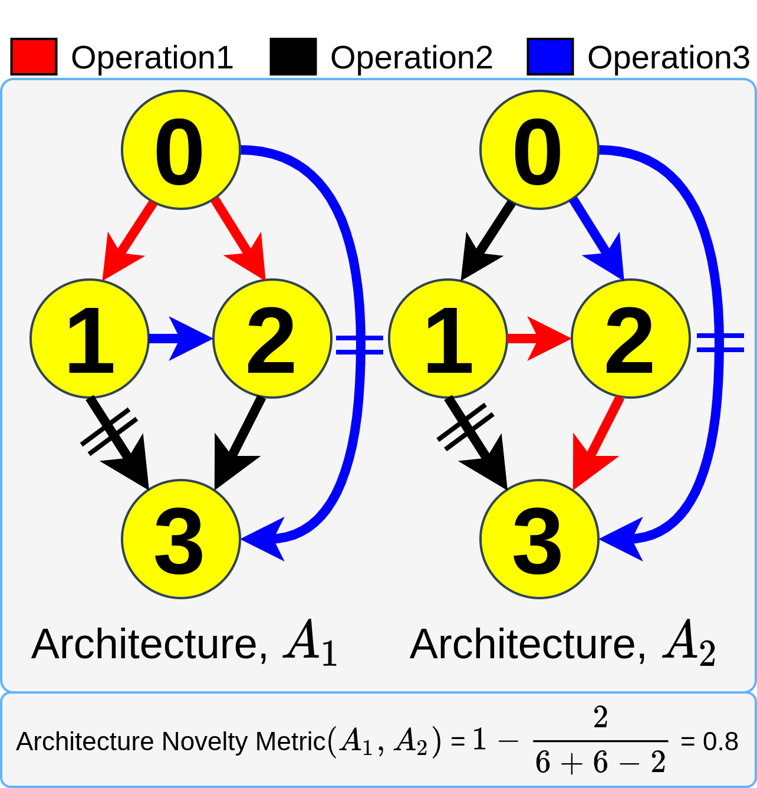

Evolving Neural Architecture Using One Shot Model

Authors: Nilotpal Sinha, Kuan-Wen Chen
ACM SIGEVO Genetic and Evolutionary Computation Conference (GECCO) 2021
Abstract: Previous evolution based architecture search require high computational resources resulting in large search time. In this work,
we propose a novel way of applying a simple genetic algorithm to the neural architecture search problem called EvNAS (Evolving Neural
Architecture using One Shot Model) which reduces the search time significantly while still achieving better result than previous evolution
based methods. The architectures are represented by architecture parameter of one shot model which results in the weight sharing among the
given population of architectures and also weight inheritance from one generation to the next generation of architectures. We use the
accuracy of partially trained architecture on validation data as a prediction of its fitness to reduce the search time. We also propose a
decoding technique for the architecture parameter which is used to divert majority of the gradient information towards the given
architecture and is also used for improving the fitness prediction of the given architecture from the one shot model during the search
process. EvNAS searches for architecture on CIFAR-10 for 3.83 GPU day on a single GPU with top-1 test error 2.47%, which is then transferred
to CIFAR-100 and ImageNet achieving top-1 error 16.37% and top-5 error 7.4% respectively.
[Full Paper]
[CODE]
Neural Architecture Search using Covariance Matrix Adaptation Evolution Strategy

Authors: Nilotpal Sinha, Kuan-Wen Chen
submitted to Evolutionary Computation (MIT Press)
Abstract: Evolution-based neural architecture search requires high computational resources, resulting in long search time. In this work, we propose
a framework of applying the Covariance Matrix Adaptation Evolution Strategy (CMA-ES) to the neural architecture search problem called CMANAS,
which achieves better results than previous evolution-based methods while reducing the search time significantly. The architectures are modelled
using a normal distribution, which is updated using CMA-ES based on the fitness of the sampled population. We used the accuracy of a trained one
shot model (OSM) on the validation data as a prediction of the fitness of an individual architecture to reduce the search time. We also used an
architecture-fitness table (AF table) for keeping record of the already evaluated architecture, thus further reducing the search time. CMANAS
finished the architecture search on CIFAR-10 with the top-1 test accuracy of 97.44% in 0.45 GPU day and on CIFAR-100 with the top-1 test accuracy
of 83.24% for 0.6 GPU day on a single GPU. The top architectures from the searches on CIFAR-10 and CIFAR-100 were then transferred to ImageNet,
achieving the top-5 accuracy of 92.6% and 92.1%, respectively.
[Evolutionary Computation (MIT Press)]
[arXiv]
[CODE]
Following is the visualization of the architecture search on CIFAR-10 dataset by the weight sharing based CMANAS. Here we visualize the mean of
the normal distribution and its progression during the architecture search.

Similarly, following is the visualization of the architecture search on CIFAR-10 dataset by the non-weight sharing based CMANAS.

Neural Architecture Search using Progressive Evolution

Authors: Nilotpal Sinha, Kuan-Wen Chen
ACM SIGEVO Genetic and Evolutionary Computation Conference (GECCO) 2022
Abstract: Vanilla neural architecture search using evolutionary algorithms (EA) involves evaluating each architecture by
training it from scratch, which is extremely time-consuming. This can be reduced by using a supernet to estimate the
fitness of every architecture in the search space due to its weight sharing nature. However, the estimated fitness is
very noisy due to the co-adaptation of the operations in the supernet. In this work, we propose a method called
pEvNAS wherein the whole neural architecture search space is progressively reduced to smaller search space regions with good
architectures. This is achieved by using a trained supernet for architecture evaluation during the architecture search using
genetic algorithm to find search space regions with good architectures. Upon reaching the final reduced search space, the supernet is then
used to search for the best architecture in that search space using evolution. The search is also enhanced by using weight inheritance
wherein the supernet for the smaller search space inherits its weights from previous trained supernet for the bigger search space.
Exerimentally, pEvNAS gives better results on CIFAR-10 and CIFAR-100 while using significantly less computational resources as compared
to previous EA-based methods.
[arXiv]
[Paper]
[CODE]
Novelty Driven Evolutionary Neural Architecture Search

Authors: Nilotpal Sinha, Kuan-Wen Chen
ACM SIGEVO Genetic and Evolutionary Computation Conference (GECCO) 2022
Abstract:
Evolutionary algorithms (EA) based neural architecture search (NAS) involves evaluating each architecture by training it from scratch,
which is extremely time-consuming. This can be reduced by using a supernet for estimating the fitness of an architecture due to weight
sharing among all architectures in the search space. However, the estimated fitness is very noisy due to the co-adaptation of the
operations in the supernet which results in NAS methods getting trapped in local optimum. In this paper, we propose a method called
NEvoNAS wherein the NAS problem is posed as a multi-objective problem with 2 objectives: (i) maximize architecture novelty, (ii) maximize
architecture fitness/accuracy. The novelty search is used for maintaining a diverse set of solutions at each generation which helps
avoiding local optimum traps while the architecture fitness is calculated using supernet. NSGA-II is used for finding the pareto optimal
front for the NAS problem and the best architecture in the pareto front is returned as the searched architecture. Exerimentally, NEvoNAS
gives better results on 2 different search spaces while using significantly less computational resources as compared to previous EA-based methods.
[arXiv]
[Poster]
[CODE]